This manual is for pyExifToolGUI (version 0.32, January 2013). pyExifToolGui is a python pySide QT4 script program that reads and writes metadata like exif, xmp, gps, gpano tags from/to image files. It can use a "reference" image as source image to copy data from. A strong point of this software is the ability to write the data, copied or not from a source image, to multiple images at once.
pyExifToolGui is a python pySide QT4 script program that reads and writes exif, gps, xmp, gpano (and a very limited set of IPTC) tags from/to image files using exiftool. pyExifToolGUI: py for python, GUI for Graphical User Interface to ExifTool.
pyExifToolGui is a graphical frontend for the excellent open source command line tool ExifTool by Phil Harvey. pyExifToolGui is not a complete ExifTool Gui, far from that. I needed a tool to add gps data to my images and couldn't find one and decided to write my own. So the main goal for this tool was the ability to write gps data to photos as I photograph a lot in buildings like Churches/Cathedrals and Musea (when allowed), which means that the gps functionality of the camera doesn't function. In the mean time the functionality of pyExifToolGUI has expanded and also supports reading, writing and exporting all kind of metadata. Next to that it now contains also extended photo file renaming functionality based on the exif info in your photos. By now pyExifToolGUI is a general exiftool Gui but it is still far from complete.
This pyExifToolGUI tool is also a geotagging tool since version 0.4!
IPTC tags are only partly supported. IPTC is an older and slowly deminishing metadata standard being replaced by xmp. Where applicable, e.g. redundant tags in xmp, the iptc tags will be updated simultaneously.
This program is Open Source and completely free and will always stay that way, but you can donate any amount to me to show your appreciation. See the Help menu in the program or the donate button below.
This manual and the pyExifToolGUI version might not always run synchronously. If new functionality
is added to the program which requires a new chapter or paragraph, the manual will be updated for that new section.
However, not all parts of the manual will/might be updated which might lead to older program screens in the manual that might
slightly deviate from the program version you will be working with.
Note also that you will see screen captures from several operating systems (Linux/Windows/Mac OS X) and/or window managers (on Linux).
This tool is written for Linux and primarily aimed at Linux. However, it runs fine and functions fine on Mac OS X and Windows as well for which, respectively, a program bundle and an executable is available for download. pyExifToolGUI is currently not part of any Linux distribution and I'm currently lacking the skills to write a distutils or exportutils (or good automake/configure) script to package it for Ubuntu (or any other Debian based linux), or (Open)Suse or Fedora/Redhat. This also means that it doesn't do any dependency checks for necessary libraries and so on. I wrote a simple "setup" script that takes care of installation and removal. This setup script is for Linux but can also be used on Mac OS X.
Note: pyExifToolGUI comes without exiftool which you need to download yourself from Phil Harvey's exiftool site if you want the latest version. On Linux you can also use the version belonging to your distribution.
For Mac OS X you can either run the simple pyExifToolGUI.app bundle (via the setup script) from the tar.gz and install the dependencies yourself, or you can download the full bundle which includes everything internally.
For Windows a python executable has been created (Note to Windows users: Currently there is the closed sourced but free exiftoolgui for windows. pyexiftoolgui contains the functionality of applying your changes to a selected set of images at once, exiftoolgui only has this on a limited set of tags. The total "functionality set" of exiftoolgui is currently more then that of pyexiftoolgui, but it misses the new GPano functionality (see paragraph 5.4).
You can run pyexiftoolgui without installing it: see paragraph 2.4 below the installation instructions.
Dependencies (Meaning that you need to install them yourself):
Installation:
sudo ./setup.py install.
sudo ./install_remove.py install.
You have two options for installation on Mac OS X
Download the dmg with the full pyexiftoolgui.app bundle. Open the dmg and copy the pyexiftoolgui.app to a place of your liking where /Applications is of course the most suitable location.
Dependencies (Meaning that you need to install them yourself):
Installation:
sudo ./setup.py install.
sudo ./install_remove.py install.
For windows an executable has been created. This could be easily packaged with some open source installer like INNOsetup, but for the moment it is simply packaged in a zip file. Unzip the zip archive to some folder of your liking and start it. This also means that the package does not create registry entries. Note: As mentioned in the intro: pyExifToolGUI comes without exiftool itself. If you download it, the default version for windows is called exiftool(-k).exe. Always rename this to exiftool.exe as the exiftool(-k).exe version pauses after every screen of output and requires a keypress to continue: You don't want that. (Tip: If you only see exiftool(-k) without an extension in you file manager then simply rename it to exiftool).
You can run pyexiftoolgui without installing it.
- Linux/MacOSX
$ ./bin/pyexiftoolgui
- Windows
$ sudo ./setup.py remove.
$ sudo ./install_remove.py remove.
The program consists of a left pane containing your photos, and a right pane which consists of a set of tabs. One of these tabs contains a subset of tabs. Next to the tabs on the right the program also has an "Extra" menu which contains another set of functionalities. A number of buttons and functions will not work, and are disabled, untill you have loaded at least one photo. Most actions on your images which you perform in the right tabs or in the Extra menu, only work after having selected at least one, or more of the loaded photos in the left pane.
Select an image and simply click one of the radiobuttons. If you have multiple images selected, the metadata for the last selected image will be displayed.
Here as well: All actions in the right "Edit" tab only work after having selected one or more of the loaded photos.
This is not a tab, but a sub-menu from the main menu. A few options can only be used in conjunction with the Context menu.
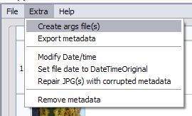
The program also contains "context menu" functionality, which is more generally known as "right-click" functionality. This functionality can be very handy in some situations as it reduces mouse (kilo)meters.
Without photos loaded, you will have a "mini" menu. With photos loaded you will get a larger context menu containing image related functions.
| 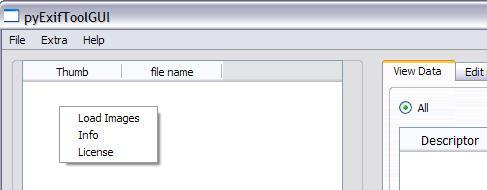 Context menu without photos loaded. |
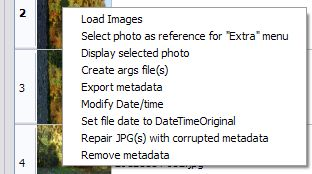 Context menu with photos loaded. |
The "View Data" tab gives you the option to display all available meta data from a photo (image).
You select a photo on the left side and click the radiobutton on the right side to see all or a selected
set of data of the photo.
As ExifTool supports a large number of image formats, but also movie formats, all available metadata that
ExifTool can read, can be displayed by pyExifToolGUI as well. The file filter, used to select files from the file dialog,
is by default set to all image types pexiftool supports, but can also be set to the total set of file extensions that exiftool supports (and simply to "All files (*.*)"). Note that some of the data,
or subsets of data, is simply not available in the non-image formats.
pyExifToolGUI will try to make a preview (thumbnail) of the image, but will not always succeed as most RAW formats are not supported. In case of other
formats like movies and so on, the creation of a preview will almost certain not function.

Note that the "Display Image" button will display the selected image in the default image viewer. If this "image" happens to be a movie, the movie will be displayed in the default movie/media viewer if the format is supported. (Right-click ->Display image works as well).
Image rotation is not always correctly "interpreted" by the underlying QT image plugins that create the preview thumbnails. If you think it is not correct you can simply select the image, click on the "Display Image" button and see whether your "normal" image viewer displays it correctly, meaning that your image has the correct setting.
The application is a so called "tabbed" application. The "Edit Data" tab is the (obvious) tab that contains the sub tabs with all the edit options. Currently a moderate set of tabs have been defined but the order, number and even content can change during the further development of this application.
This tab is used to add GPS data to your images. This tab works on a combination of exif, xmp and iptc gps data as latitude, longitude and altitude are covered in both the exif and in the xmp metadata structure. The Location metadata details (Country, Province/State, city, Location) are covered by xmp and IPTC. This tab therefore acts on multiple tag categories (exif, xmp and iptc) at once and simply tries to make your gps/location data as complete as possible in the several tag categories.
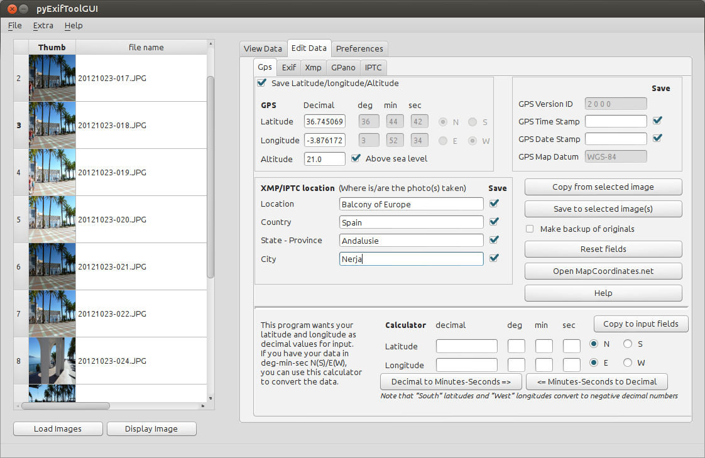Note: When the "Save" checkbox is enabled, empty fields will write empty values to your image(s). Take this into account!
This tab is used to add (a limited amount of) exif data to your selected image(s).
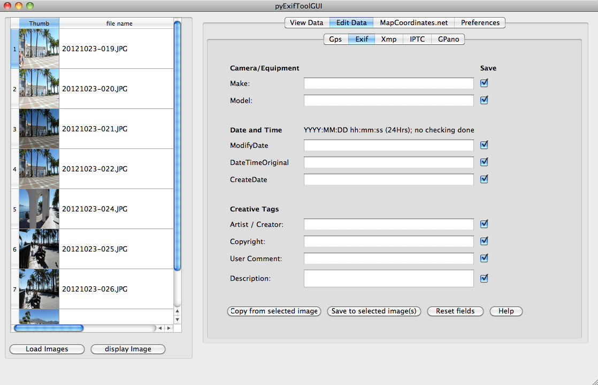Things to take into account!
As you can see the options all have a Save checkbox behind their input fields. It means that this option will be saved when checked, even when the field is empty. This also means that you can:
This tab is used to add (a limited amount of) xmp data to your selected image(s).
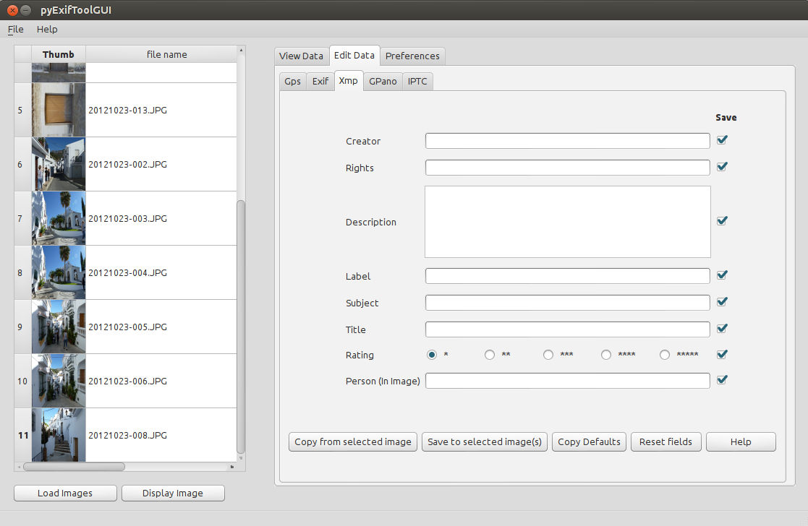Things to take into account!
As you can see the options all have a Save checkbox behind their input fields. It means that this option will be saved when checked, even when the field is empty. This also means that you can:
This tab is used to add GPano Google PhotoSphere data to your selected image(s).
The Google PhotoSphere functionality has been added in November 2012 to PicasaWeb and Google+ to enable the use of auto-rotating panoramic photos inside these products. For more info see this Google page
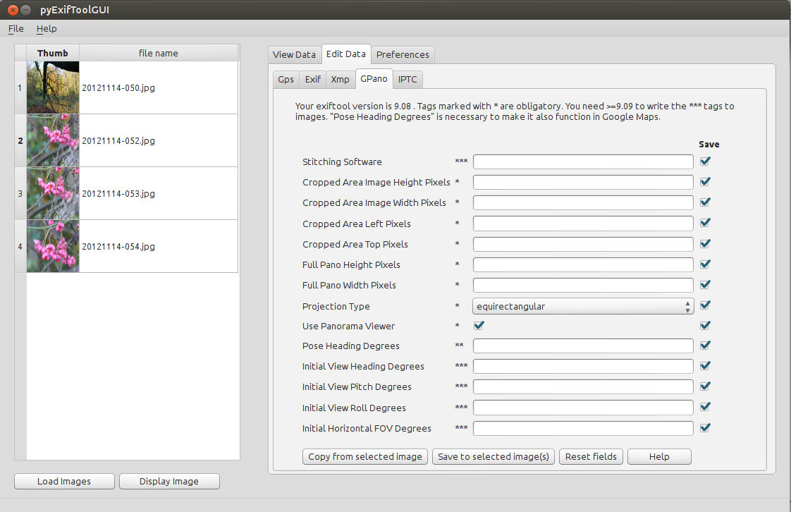
This functionality is only available if you have exiftool 9.07 or newer. You can always download the latest exiftool version. On Windows and Mac OS X simply install it. On Linux you simply unpack the tar.gz to some folder. After the install/unpack you can use the Preferences tab to select that untarred version.
Things to take into account!
As you can see the options all have a Save checkbox behind their input fields It means that this option will be saved when checked, even when the field is empty. This also means that you can:
Geotagging adds GPS data to your images based on data from a GPS track log file. This GPS track file can be used from your phone, gps device, navigation device, or whatever you have providing such a GPS track.
The GPS track log file is loaded, and linear interpolation is used to determine the GPS position at the time of the image, then the following tags are written to the image (if the corresponding information is available).
It means that your camera needs to be set correctly with regard to the date/time of the location where you are.
PyExifToolGUI also supports the "Geosync" feature of ExifTool. The Geosync tag is only needed when the image timestamps are not properly synchronized with GPS time.
For example, a value of "+1:20" specifies that 1 minute and 20 seconds is added to the Geotime value before checking with the GPS track file. This is for a camera running 1 minute 20 seconds slower than the GPS clock.
The Geosync time is specified as "SS", "MM:SS", "HH:MM:SS" or "DD HH:MM:SS" (where SS=seconds, MM=minutes, HH=hours and DD=days), and a leading "+" or "-" may be added for positive or negative differences.
Note: Do not use (double) quotes around the geosync time in pyExifToolGUI. Simply use something like -25 or +1:20
In pyExifToolGUI you have 2 options:
In case of the first option you need to leave the folder empty. If the "Folder containing the images:" is not left empty, it will always be the first option used.
Note that pyExifToolGui will write both the EXIF GPS tags as well as the XMP GPS tags.
IPTC is an older metadata information standard. It stands for "International Press Telecommunications Council", also with a combination with the Newspaper Association of America (NAA) Information Interchange Model (IIM). This already shows the primary goal of this standard which is perhaps not what an amateur photograph is aiming for. Next to that: IPTC is being phased out in favor of XMP.
On some of the edit tabs the IPTC data is automatically updated when (for example) the xmp data is updated.
Below you'll find an example of how you can use the program to edit the metadata of your images. Click the images for a full size version.
| 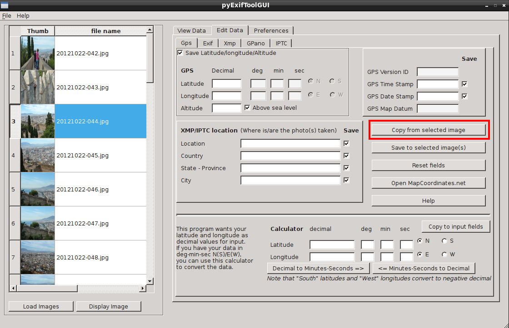 | Load your image(s) via "File -> Load Images", via the "Load Images" button or via the right-click option in the context menu.
Go to the "Edit -> Gps" tag. If one of your images contains the info you need for your other image(s), select that image. Use the "Copy from selected image". The available gps information will be copied into the relevant input fields. |
| 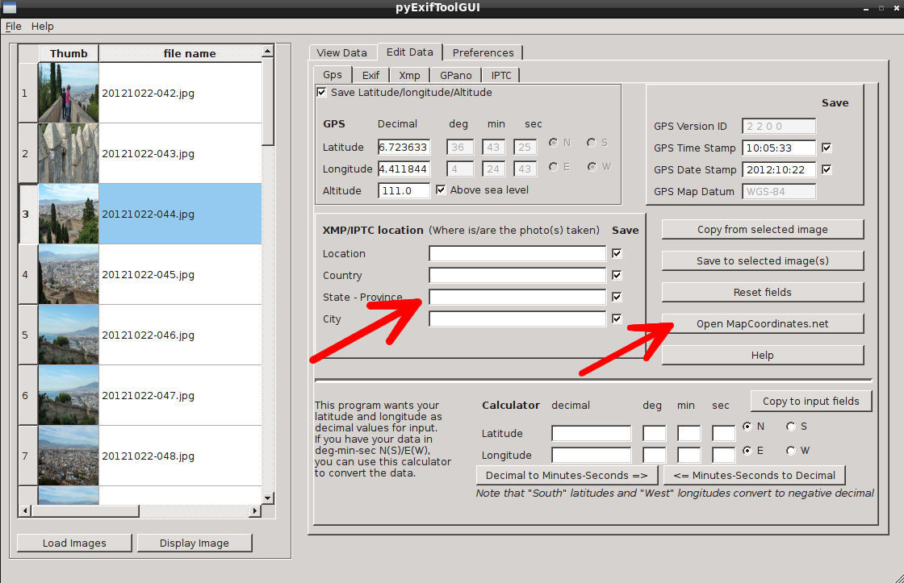 | The xmp/iptc location info (location, country, state, city) is hardly ever available, but you can add the info yourself. In case your images don't contain any information at all, but you do know the location, you can click the "Open MapCoordinates.net" button. This will open the mapcoordinates.net website in your default webbrowser. mapcoordinates.net is based on google maps and you can search for the location and landmarks, like "Eiffel tower" (in Paris) or "machu picchu" (Peru). The website will display a popup with the decimal altitude and longitude coordinates and the altitude. Note that this altitude is mostly correct, but sometimes completely wrong. |
| 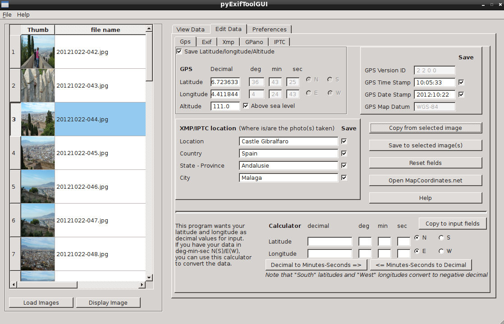 | After you have added or altered the information, you need to pay attention to which information you want to save to your image(s). The Save checkboxes determine which information will be stored upon saving. Note that when an input field is empty, you can by accident, or deliberately write "clean" the data in your images for the relevant tags. |
| 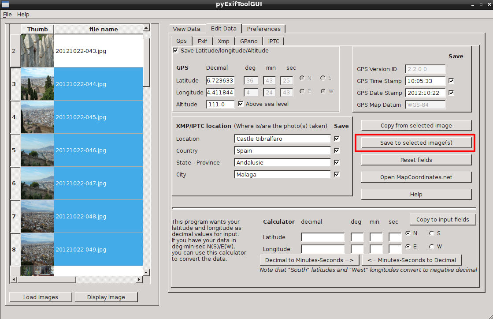 | Now select the photos on the left side where you want the information to be saved into. Note that Shift and Control works in selecting the photos. Once you have selected the images click the "Save to selected images" button. |
| 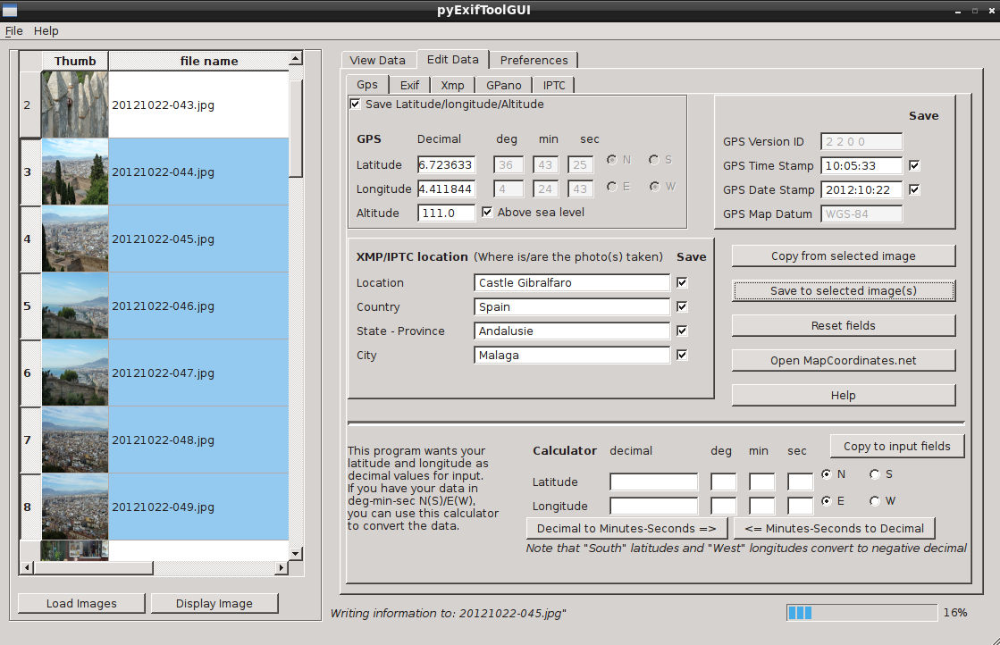 | Once the button "Save to selected images" has been clicked you will see a message displayed describing which image is processed and a progress bar displaying the complete progress. |
The following workflow shows an example where (in this case) old diapositives out of 1977 were scanned. We start with the scanned images and the workflow is as follows:
The following workflow consists of a mix-and-match of Mac OS X screens and Ubuntu Unity screens (the latter with Mac OS X windowing icon theme as I don't like Ubuntu Unity's default orange icons).
| 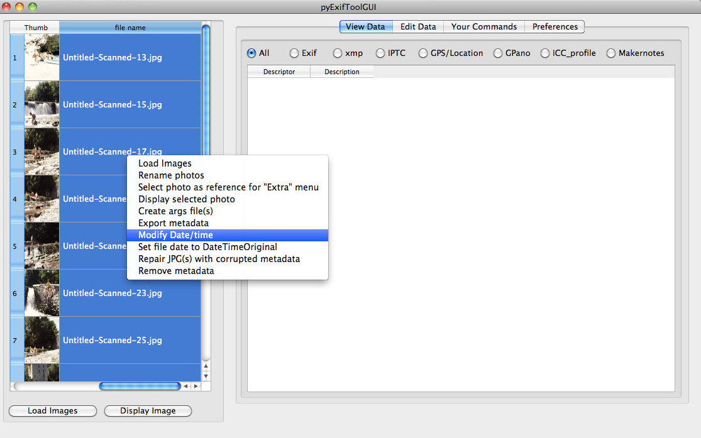 | After you have loaded your image(s) and made your selection, you select the "Modify Date/time" option by either right-clicking and selecting it from the context menu or from the Extra menu. |
| 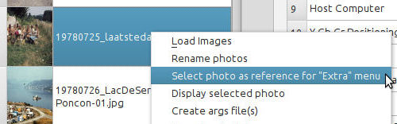 | Note: If you have a photo with the correct datetime tags, you can select it from your photo-selection, right-click that photo and select the option "Select photo as reference for "Extra" menu". You can then use the copied data in a number of edit screens. It will remain available after a new "load image(s)" session. |
| 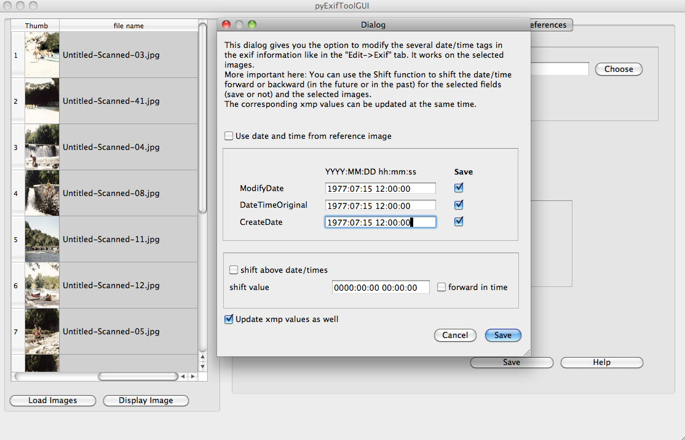 | Set the date and time in the "ModifyDate" field to the correct date (In this case of old scanned photos as accurate as possible). When done click the "Save" button. Note: If you did select a reference photo with correct datetime metadata tags, you can now use that data by checking the "Use date and time from reference image". It will immediately fill/update the three datetime fields. |
| 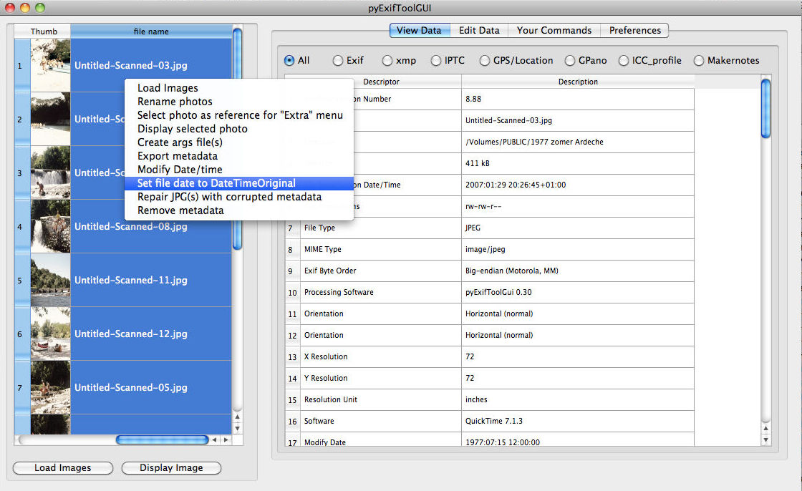 | Right-click somewhere in your selection and select from the context-menu the option "Set file date to DateTimeOriginal" or select that option from the "Extra" menu. |
| 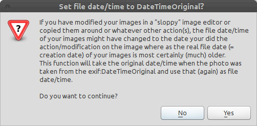 | If you scanned your old photos, negatives or diapositives, your scanned images will get the file date time of the moment of scanning while your images itself are (most certainly) much older. This function will now take the "exif:DateTimeOriginal" from the metadata datetime tags in your image(s) you just added in the previous step and use that as file date/time. Note: exiftool can go back as far as 01-01-1970 for file dates (metadata can be any date/time). If your images are from e.g. 26 December 1958 (mid day) you need to use the "touch" function on linux/Mac OS X like "touch -t 195812261200.00 name_of_image(s)" |
| 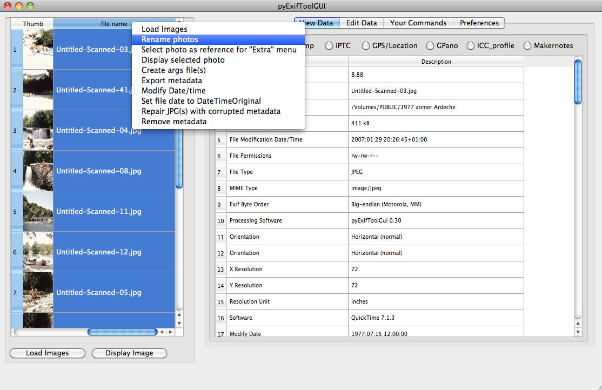 | Renaming your photos requires that your photos must contain metadata as that is where exiftool
renaming is based upon. Right-click somewhere in your image selection and select the option "Rename photos" from the context menu or select that option from the "Extra" menu. |
| 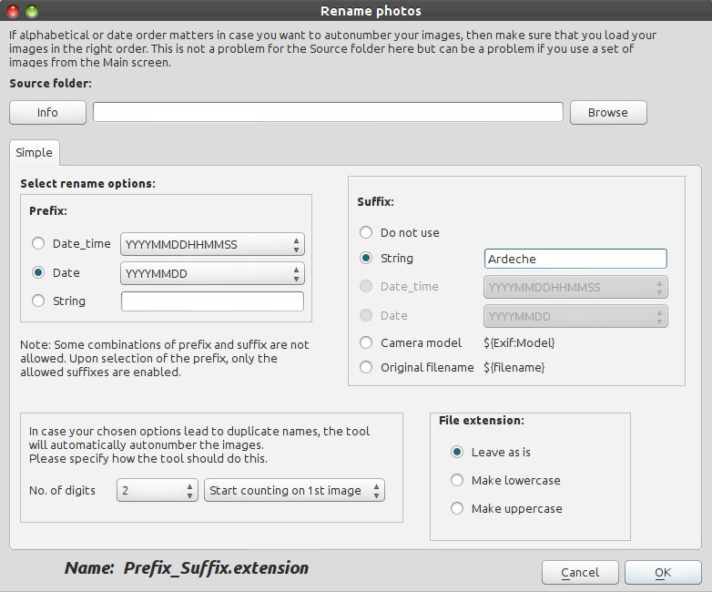 | In this screen you can rename your photos based upon a selection from the main screen, or from an entire folder which you can select here. In this example workflow the renaming is based on the main screen selection so we leave the source folder empty. (Click the info button in this dialog for more info) |
The extra menu gives a set of exiftool command options which will be explained in the following subsections.
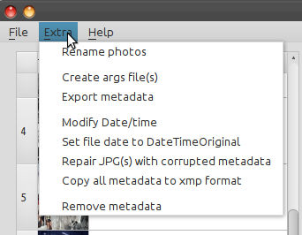
The functionality of this screen is also partially described in the 5.6.2 After scanning: Correcting Date/time and Renaming workflow above.
= Selecting a source folder in this renaming screen.
= What are the differences? |
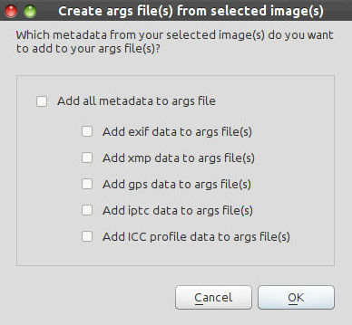Exiftool has the option to output information in the form of exiftool arguments. If you create an args file by exporting the information from your photo(s), you can use this args file as an "exiftool commands" file to write to another (set of) photo(s). pyExifToolGUI (currently) only supports the creation of these args files. pyExifToolGUI can't use these files (yet) to write to other photos. |
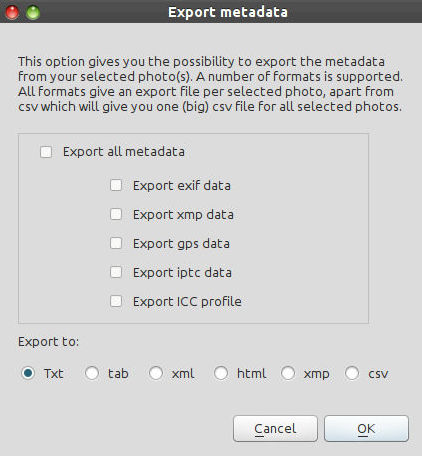 Exiftool can export the metadata inside images to a number of output formats. From this popup screen you can export the metadata from your selected image(s) to files in these export formats. Note that per selected image an output (export) file is written (1 photo gives 1 export file). The only exception to this is the
"csv" format. The "csv" format is an LibreOffice/OpenOffice/Excel compatible format which contains one row of
metadata per image in one "output.csv"file. Note also that the output files are written to the same folder as where the images are. |
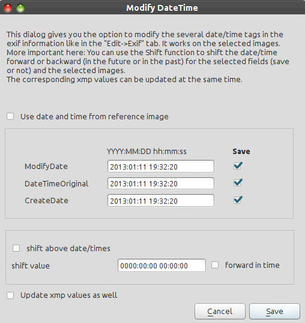 As the popup mentions: This dialog gives you the option to modify the several date/time tags in the exif information like in the "Edit->Exif" tab. It works on the images you selected in the main screen. This dialog gives you more date/time functionality (and only date/time functionality) compared to the exif->edit tab: You can use the "shift above date/times" function to shift the date/time forward or backward (in the future or in the past) for the selected fields. This function also respects whether you selected the specific tag (field) to save or not, and also works on the selected images from the main screen. The corresponding xmp values can be updated at the same time. |
If you modified your images in a "sloppy" image editor or copied them around or whatever other action(s), the file
date/time of your images might have changed to the date when you did your action/modification on the photo(s). In
such a situation the real filedate(= creation date) of your images is (much) older. You might want to change the file date
back to what it really should be based on the metadata when you took the photo.
This "Set file/date time to DateTimeOriginal" function will take the original date/time when the photo was taken from the exif:DateTimeOriginal
and use that (again) as file date/time.
|
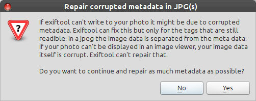 As the popup on the left already mentions: If exiftool can't write to your photo it might be due to corrupted
metadata. Exiftool can fix a lot of the metadata but only for the tags that are still readible. In a jpeg the image data is separated from the meta data. Exiftool will create a clean metadata structure and write as much metadata back to the metadata part of the JPG. |
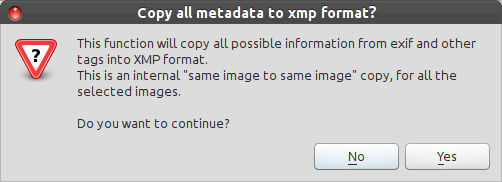
XMP stands for "Extensible Metadata Platform", an XML/RDF-based metadata format which is being pushed by Adobe.
Information in this format can be embedded in many different image file types including JPG, JP2, TIFF, GIF, EPS,
PDF, PSD, IND, INX, PNG, DJVU, SVG, PGF, MIFF, XCF, CRW, DNG and a variety of proprietary TIFF-based RAW images,
as well as in MOV, AVI, ASF, WMV, FLV, SWF and MP4 videos, but also in WMA and audio formats supporting ID3v2 information. XMP is a "growing" and easy extensible metadata format and already incorporates a lot of EXIF and IPTC metadata. It also allows for software products to define their own set of XMP tags, like the Google photosphere, microsoft face recognition and Digikam xmp tags. |
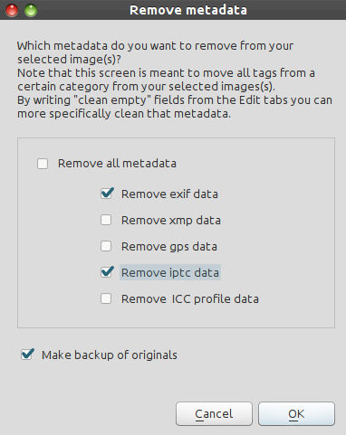
This function (on the left) is the most dangerous one of the program. Therefore it is one of the few functions using a
second "Are you sure?" popup (see below) and that's also why it makes a backup of your images by default. |
On this tab you can define your own parameters to "send to" exiftool. The parameters will be executed on the images you have selected on the left.
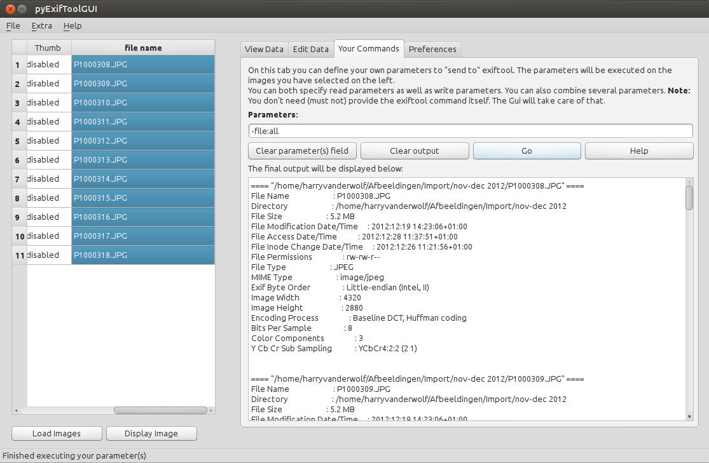
You can both specify read parameters as well as write parameters but not in one command: write actions take precedence. You can also combine several parameters. Note: You don't need (must not) provide the exiftool command itself. The Gui will take care of that.
One thing YOU need to take care of is the use of either single quotes or double quotes around some commands. If you want to set the file date to the date the photo was taken, you need the command -FileModifyDate<DateTimeOriginal.
On Windows you need to double-quote this and on Linux and Mac OS X you need to single-quote this, like
| -exif:all | will display all exif tags for the selected images |
| -exif:all= | will remove(!) all exif tags from the selected images |
| -Exif:Artist="My Name" | Will put "Your Name" into the selected images |
| -Xmp:City=Zwolle -Xmp:Country=Netherlands | Will write your city and country into the xmp tags of your image(s) |
The Preferences tab gives you the option to select some defaults for this application.
For the Gpano functionality you really need a version equal or newer then 9.07. See also "5.4 Edit GPano (Google Photosphere) data".
These fields give you the option to specify your name (for example) and some copyright notice (for example: Spiderman (c) 2012). They can be copied into the relevant exif, xmp and iptc fields for these values.
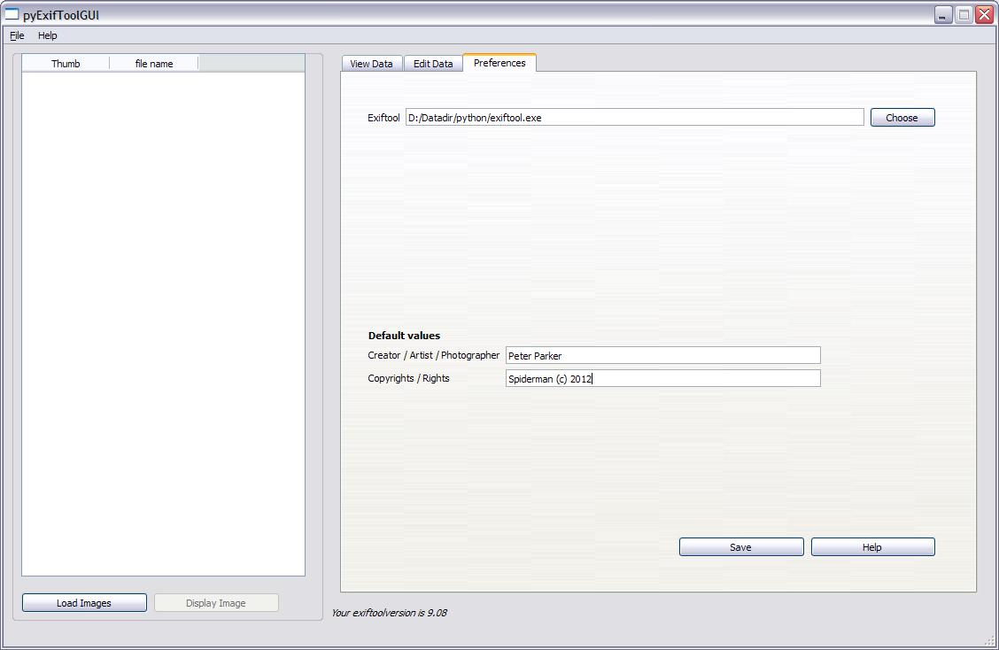
Version 1.2, November 2002
Copyright © 2000, 2001, 2002 Free Software Foundation, Inc.
51 Franklin St, Fifth Floor, Boston, MA 02110-1301, USA
Everyone is permitted to copy and distribute verbatim copies
of this license document, but changing it is not allowed.
The purpose of this License is to make a manual, textbook, or other functional and useful document free in the sense of freedom: to assure everyone the effective freedom to copy and redistribute it, with or without modifying it, either commercially or noncommercially. Secondarily, this License preserves for the author and publisher a way to get credit for their work, while not being considered responsible for modifications made by others.
This License is a kind of “copyleft”, which means that derivative works of the document must themselves be free in the same sense. It complements the GNU General Public License, which is a copyleft license designed for free software.
We have designed this License in order to use it for manuals for free software, because free software needs free documentation: a free program should come with manuals providing the same freedoms that the software does. But this License is not limited to software manuals; it can be used for any textual work, regardless of subject matter or whether it is published as a printed book. We recommend this License principally for works whose purpose is instruction or reference.
This License applies to any manual or other work, in any medium, that contains a notice placed by the copyright holder saying it can be distributed under the terms of this License. Such a notice grants a world-wide, royalty-free license, unlimited in duration, to use that work under the conditions stated herein. The “Document”, below, refers to any such manual or work. Any member of the public is a licensee, and is addressed as “you”. You accept the license if you copy, modify or distribute the work in a way requiring permission under copyright law.
A “Modified Version” of the Document means any work containing the Document or a portion of it, either copied verbatim, or with modifications and/or translated into another language.
A “Secondary Section” is a named appendix or a front-matter section of the Document that deals exclusively with the relationship of the publishers or authors of the Document to the Document's overall subject (or to related matters) and contains nothing that could fall directly within that overall subject. (Thus, if the Document is in part a textbook of mathematics, a Secondary Section may not explain any mathematics.) The relationship could be a matter of historical connection with the subject or with related matters, or of legal, commercial, philosophical, ethical or political position regarding them.
The “Invariant Sections” are certain Secondary Sections whose titles are designated, as being those of Invariant Sections, in the notice that says that the Document is released under this License. If a section does not fit the above definition of Secondary then it is not allowed to be designated as Invariant. The Document may contain zero Invariant Sections. If the Document does not identify any Invariant Sections then there are none.
The “Cover Texts” are certain short passages of text that are listed, as Front-Cover Texts or Back-Cover Texts, in the notice that says that the Document is released under this License. A Front-Cover Text may be at most 5 words, and a Back-Cover Text may be at most 25 words.
A “Transparent” copy of the Document means a machine-readable copy, represented in a format whose specification is available to the general public, that is suitable for revising the document straightforwardly with generic text editors or (for images composed of pixels) generic paint programs or (for drawings) some widely available drawing editor, and that is suitable for input to text formatters or for automatic translation to a variety of formats suitable for input to text formatters. A copy made in an otherwise Transparent file format whose markup, or absence of markup, has been arranged to thwart or discourage subsequent modification by readers is not Transparent. An image format is not Transparent if used for any substantial amount of text. A copy that is not “Transparent” is called “Opaque”.
Examples of suitable formats for Transparent copies include plain ascii without markup, Texinfo input format, LaTeX input format, SGML or XML using a publicly available DTD, and standard-conforming simple HTML, PostScript or PDF designed for human modification. Examples of transparent image formats include PNG, XCF and JPG. Opaque formats include proprietary formats that can be read and edited only by proprietary word processors, SGML or XML for which the DTD and/or processing tools are not generally available, and the machine-generated HTML, PostScript or PDF produced by some word processors for output purposes only.
The “Title Page” means, for a printed book, the title page itself, plus such following pages as are needed to hold, legibly, the material this License requires to appear in the title page. For works in formats which do not have any title page as such, “Title Page” means the text near the most prominent appearance of the work's title, preceding the beginning of the body of the text.
A section “Entitled XYZ” means a named subunit of the Document whose title either is precisely XYZ or contains XYZ in parentheses following text that translates XYZ in another language. (Here XYZ stands for a specific section name mentioned below, such as “Acknowledgements”, “Dedications”, “Endorsements”, or “History”.) To “Preserve the Title” of such a section when you modify the Document means that it remains a section “Entitled XYZ” according to this definition.
The Document may include Warranty Disclaimers next to the notice which states that this License applies to the Document. These Warranty Disclaimers are considered to be included by reference in this License, but only as regards disclaiming warranties: any other implication that these Warranty Disclaimers may have is void and has no effect on the meaning of this License.
You may copy and distribute the Document in any medium, either commercially or noncommercially, provided that this License, the copyright notices, and the license notice saying this License applies to the Document are reproduced in all copies, and that you add no other conditions whatsoever to those of this License. You may not use technical measures to obstruct or control the reading or further copying of the copies you make or distribute. However, you may accept compensation in exchange for copies. If you distribute a large enough number of copies you must also follow the conditions in section 3.
You may also lend copies, under the same conditions stated above, and you may publicly display copies.
If you publish printed copies (or copies in media that commonly have printed covers) of the Document, numbering more than 100, and the Document's license notice requires Cover Texts, you must enclose the copies in covers that carry, clearly and legibly, all these Cover Texts: Front-Cover Texts on the front cover, and Back-Cover Texts on the back cover. Both covers must also clearly and legibly identify you as the publisher of these copies. The front cover must present the full title with all words of the title equally prominent and visible. You may add other material on the covers in addition. Copying with changes limited to the covers, as long as they preserve the title of the Document and satisfy these conditions, can be treated as verbatim copying in other respects.
If the required texts for either cover are too voluminous to fit legibly, you should put the first ones listed (as many as fit reasonably) on the actual cover, and continue the rest onto adjacent pages.
If you publish or distribute Opaque copies of the Document numbering more than 100, you must either include a machine-readable Transparent copy along with each Opaque copy, or state in or with each Opaque copy a computer-network location from which the general network-using public has access to download using public-standard network protocols a complete Transparent copy of the Document, free of added material. If you use the latter option, you must take reasonably prudent steps, when you begin distribution of Opaque copies in quantity, to ensure that this Transparent copy will remain thus accessible at the stated location until at least one year after the last time you distribute an Opaque copy (directly or through your agents or retailers) of that edition to the public.
It is requested, but not required, that you contact the authors of the Document well before redistributing any large number of copies, to give them a chance to provide you with an updated version of the Document.
You may copy and distribute a Modified Version of the Document under the conditions of sections 2 and 3 above, provided that you release the Modified Version under precisely this License, with the Modified Version filling the role of the Document, thus licensing distribution and modification of the Modified Version to whoever possesses a copy of it. In addition, you must do these things in the Modified Version:
If the Modified Version includes new front-matter sections or appendices that qualify as Secondary Sections and contain no material copied from the Document, you may at your option designate some or all of these sections as invariant. To do this, add their titles to the list of Invariant Sections in the Modified Version's license notice. These titles must be distinct from any other section titles.
You may add a section Entitled “Endorsements”, provided it contains nothing but endorsements of your Modified Version by various parties—for example, statements of peer review or that the text has been approved by an organization as the authoritative definition of a standard.
You may add a passage of up to five words as a Front-Cover Text, and a passage of up to 25 words as a Back-Cover Text, to the end of the list of Cover Texts in the Modified Version. Only one passage of Front-Cover Text and one of Back-Cover Text may be added by (or through arrangements made by) any one entity. If the Document already includes a cover text for the same cover, previously added by you or by arrangement made by the same entity you are acting on behalf of, you may not add another; but you may replace the old one, on explicit permission from the previous publisher that added the old one.
The author(s) and publisher(s) of the Document do not by this License give permission to use their names for publicity for or to assert or imply endorsement of any Modified Version.
You may combine the Document with other documents released under this License, under the terms defined in section 4 above for modified versions, provided that you include in the combination all of the Invariant Sections of all of the original documents, unmodified, and list them all as Invariant Sections of your combined work in its license notice, and that you preserve all their Warranty Disclaimers.
The combined work need only contain one copy of this License, and multiple identical Invariant Sections may be replaced with a single copy. If there are multiple Invariant Sections with the same name but different contents, make the title of each such section unique by adding at the end of it, in parentheses, the name of the original author or publisher of that section if known, or else a unique number. Make the same adjustment to the section titles in the list of Invariant Sections in the license notice of the combined work.
In the combination, you must combine any sections Entitled “History” in the various original documents, forming one section Entitled “History”; likewise combine any sections Entitled “Acknowledgements”, and any sections Entitled “Dedications”. You must delete all sections Entitled “Endorsements.”
You may make a collection consisting of the Document and other documents released under this License, and replace the individual copies of this License in the various documents with a single copy that is included in the collection, provided that you follow the rules of this License for verbatim copying of each of the documents in all other respects.
You may extract a single document from such a collection, and distribute it individually under this License, provided you insert a copy of this License into the extracted document, and follow this License in all other respects regarding verbatim copying of that document.
A compilation of the Document or its derivatives with other separate and independent documents or works, in or on a volume of a storage or distribution medium, is called an “aggregate” if the copyright resulting from the compilation is not used to limit the legal rights of the compilation's users beyond what the individual works permit. When the Document is included in an aggregate, this License does not apply to the other works in the aggregate which are not themselves derivative works of the Document.
If the Cover Text requirement of section 3 is applicable to these copies of the Document, then if the Document is less than one half of the entire aggregate, the Document's Cover Texts may be placed on covers that bracket the Document within the aggregate, or the electronic equivalent of covers if the Document is in electronic form. Otherwise they must appear on printed covers that bracket the whole aggregate.
Translation is considered a kind of modification, so you may distribute translations of the Document under the terms of section 4. Replacing Invariant Sections with translations requires special permission from their copyright holders, but you may include translations of some or all Invariant Sections in addition to the original versions of these Invariant Sections. You may include a translation of this License, and all the license notices in the Document, and any Warranty Disclaimers, provided that you also include the original English version of this License and the original versions of those notices and disclaimers. In case of a disagreement between the translation and the original version of this License or a notice or disclaimer, the original version will prevail.
If a section in the Document is Entitled “Acknowledgements”, “Dedications”, or “History”, the requirement (section 4) to Preserve its Title (section 1) will typically require changing the actual title.
You may not copy, modify, sublicense, or distribute the Document except as expressly provided for under this License. Any other attempt to copy, modify, sublicense or distribute the Document is void, and will automatically terminate your rights under this License. However, parties who have received copies, or rights, from you under this License will not have their licenses terminated so long as such parties remain in full compliance.
The Free Software Foundation may publish new, revised versions of the GNU Free Documentation License from time to time. Such new versions will be similar in spirit to the present version, but may differ in detail to address new problems or concerns. See http://www.gnu.org/copyleft/.
Each version of the License is given a distinguishing version number. If the Document specifies that a particular numbered version of this License “or any later version” applies to it, you have the option of following the terms and conditions either of that specified version or of any later version that has been published (not as a draft) by the Free Software Foundation. If the Document does not specify a version number of this License, you may choose any version ever published (not as a draft) by the Free Software Foundation.
{kind=link}
{kind=link}
{kind=link}
{kind=link}
{kind=link}
{kind=link}
{kind=link}
{kind=link}
{kind=link}
{kind=link}